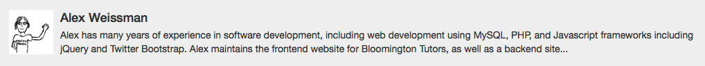
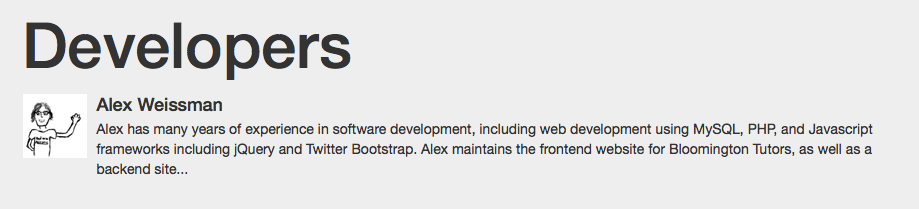
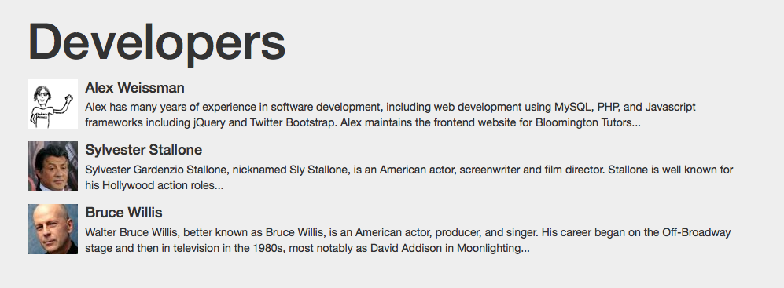

Dependencies
PHP
- 5.4+
Javascript/CSS (included in this repository)
- jQuery 1.10.2
- Bootstrap 3.3.1
- Tablesorter 2.17.7 with the pager and filter widgets
- FormValidation v0.6.1
- FontAwesome 4.1
- Bootstrap Switch 3
- Select2 3.5.1
- Bootstrapradio 0.1
Installation
It is possible to install Bootsole via Composer, or as a standalone library.
To install with composer:
- If you haven't already, get Composer and install it - preferably, globally.
- Require Bootsole, either by running
php composer.phar require alexweissman/bootsole, or by creating acomposer.jsonfile:
{
"require": {
"php": ">=5.4.0",
"alexweissman/bootsole": "0.2.0"
}
}
and running composer install.
- Include the
vendor/autoload.phpfile in your project. For an example of how this can be done, seepublic/site-config.php.
Note: The core Bootsole library is contained entirely in vendor/alexweissman/bootsole/bootsole/. You don't need the public directory - it just contains examples for how Bootsole can be used in a PHP project.
To install manually:
Copy the bootsole/ subdirectory to wherever you usually keep your site's non-public resources. If you don't know what "non-public resources" means, see Organize Your Next PHP Project the Right Way.
If you want to run the premade examples, you can copy the contents of public to your site's public directory.
Without Composer, you will need to manually include Bootsole's source files. The public/config-site.php file will do this automatically for you - feel free to move that code to your project's main config file.
Configuration
Bootsole relies on a number of predefined constants to properly find and render templates, JS and CSS includes, etc. You can find these in the bootsole/config-bootsole.php file. Most of the default values should work out of the box, except for the following:
PATH_PUBLIC_ROOT
This is the local (file) path to the public directory of your site. It is recommended that you declare it relative to the location of your config-bootsole.php file. For example, if your directory structure looks like this:
- public_html/ // This is where we want PATH_PUBLIC_ROOT to point
- js/
- css/
- <public-facing content>
- resources/
- bootsole/
- config-bootsole.php // This is where PATH_PUBLIC_ROOT is defined
- ...
- <other libraries>
you could set PATH_PUBLIC_ROOT as:
define ("Bootsole\PATH_PUBLIC_ROOT", realpath(dirname(__FILE__) . "/../../public_html") . "/");
URI_PUBLIC_ROOT
As you should know, file paths != URL paths (though there is often a strong relationship between them, especially if you aren't using a URL routing system). So, Bootsole needs to know what the public URL will be for your site.
For a development environment, this might be something like:
http://localhost/myproject/.
For a production environment, this might look like:
https://mysite.com/.
Basic usage
If you have autoloaded the library with Composer, all you should need is:
<?php
require_once "path/to/autoload.php";
use \Bootsole as BS;
...
Otherwise, you will need include the files manually, in the correct order. See public/config-site.php for an example of how this is done.
Then, you can start defining and deploying templates:
Bootsole uses the {{double handlebar}} notation for representing placeholders in a template.
Create a template:
$template = "
<div class='media'>
<a class='media-left' href='#'>
<img src='{{img_src}}' alt='{{img_alt}}' width='64' height='64'>
</a>
<div class='media-body'>
<h4 class='media-heading'>{{heading}}</h4>
{{body}}
</div>
</div>";
Then, assign content to the placeholders:
$content = [
"img_src" => "http://avatars1.githubusercontent.com/u/5004534?v=3&s=400",
"img_alt" => "Lord of the Fries",
"heading" => "Alex Weissman",
"body" => "Alex has many years of experience in software development, including web development using MySQL, PHP, and Javascript frameworks including jQuery and Twitter Bootstrap. Alex maintains the frontend website for Bloomington Tutors, as well as a backend site..."
];
Construct a new HtmlBuilder object, set the template, and render:
use \Bootsole as BS;
$hb = new BS\HtmlBuilder($content);
$hb->setTemplate($template);
echo $hb->render();
Output:

<div class='media'>
<a class='media-left' href='#'>
<img src='http://avatars1.githubusercontent.com/u/5004534?v=3&s=400 alt='Lord of the Fries' width='64' height='64'>
</a>
<div class='media-body'>
<h4 class='media-heading'>Alex Weissman</h4>
Alex has many years of experience in software development, including web development using MySQL, PHP, and Javascript frameworks including jQuery and Twitter Bootstrap. Alex maintains the frontend website for Bloomington Tutors, as well as a backend site for managing tutor and client data and activity.
</div>
</div>
Wow, amazing! So far, this is just simple find-and-replace. But we can also nest HtmlBuilder objects in the content of other HtmlBuilder objects:
Nested template objects:
$jumbotron_template = "
<div class='jumbotron'>
<h1>{{heading}}</h1>
{{body}}
</div>";
$jumbotron_content = [
"heading" => "Developers",
"body" => $hb
];
$jumbotron = new BS\HtmlBuilder($jumbotron_content);
$jumbotron->setTemplate($jumbotron_template);
echo $jumbotron->render();
Output:

<div class='jumbotron'>
<h1>Developers</h1>
<div class='media'>
<a class='media-left' href='#'>
<img src='http://avatars1.githubusercontent.com/u/5004534?v=3&s=400 alt='Lord of the Fries' width='64' height='64'>
</a>
<div class='media-body'>
<h4 class='media-heading'>Alex Weissman</h4>
Alex has many years of experience in software development, including web development using MySQL, PHP, and Javascript frameworks including jQuery and Twitter Bootstrap. Alex maintains the frontend website for Bloomington Tutors, as well as a backend site...
</div>
</div>
</div>
Alright, that's kind of cool. But what if I need a whole list of developers? Do I need a placeholder for each one?
Of course not! You can also assign an array of HtmlBuilder objects to a placeholder. They will automatically be concatenated on rendering:
Arrays of nested template objects:
$hb2 = new BS\HtmlBuilder([
"img_src" => "http://ww2.hdnux.com/photos/02/25/67/613833/3/gallery_thumb.jpg",
"img_alt" => "Rambo",
"heading" => "Sylvester Stallone",
"body" => "Sylvester Gardenzio Stallone, nicknamed Sly Stallone, is an American actor, screenwriter and film director. Stallone is well known for his Hollywood action roles..."
]);
$hb2->setTemplate($template);
$hb3 = new BS\HtmlBuilder([
"img_src" => "http://cdn.akamai.steamstatic.com/steamcommunity/public/images/avatars/d0/d0877f614b8bb52813a63915be4da611cfa0ac2e_medium.jpg",
"img_alt" => "John McClane",
"heading" => "Bruce Willis",
"body" => "Walter Bruce Willis, better known as Bruce Willis, is an American actor, producer, and singer. His career began on the Off-Broadway stage and then in television in the 1980s, most notably as David Addison in Moonlighting..."
]);
$hb3->setTemplate($template);
$jumbotron_template = "
<div class='jumbotron'>
<h1>{{heading}}</h1>
{{body}}
</div>";
$jumbotron_content = [
"heading" => "Developers",
"body" => [
$hb1,
$hb2,
$hb3
]
];
$jumbotron = new BS\HtmlBuilder($jumbotron_content);
$jumbotron->setTemplate($jumbotron_template);
echo $jumbotron->render();
Output:

<div class='jumbotron'>
<h1>Developers</h1>
<div class='media'>
<a class='media-left' href='#'>
<img src='http://avatars1.githubusercontent.com/u/5004534?v=3&s=400' alt='Lord of the Fries' width='64' height='64'>
</a>
<div class='media-body'>
<h4 class='media-heading'>Alex Weissman</h4>
Alex has many years of experience in software development, including web development using MySQL, PHP, and Javascript frameworks including jQuery and Twitter Bootstrap. Alex maintains the frontend website for Bloomington Tutors...
</div>
</div>
<div class='media'>
<a class='media-left' href='#'>
<img src='http://ww2.hdnux.com/photos/02/25/67/613833/3/gallery_thumb.jpg' alt='Rambo' width='64' height='64'>
</a>
<div class='media-body'>
<h4 class='media-heading'>Sylvester Stallone</h4>
Sylvester Gardenzio Stallone, nicknamed Sly Stallone, is an American actor, screenwriter and film director. Stallone is well known for his Hollywood action roles...
</div>
</div>
<div class='media'>
<a class='media-left' href='#'>
<img src='http://cdn.akamai.steamstatic.com/steamcommunity/public/images/avatars/d0/d0877f614b8bb52813a63915be4da611cfa0ac2e_medium.jpg' alt='John McClane' width='64' height='64'>
</a>
<div class='media-body'>
<h4 class='media-heading'>Bruce Willis</h4>
Walter Bruce Willis, better known as Bruce Willis, is an American actor, producer, and singer. His career began on the Off-Broadway stage and then in television in the 1980s, most notably as David Addison in Moonlighting...
</div>
</div>
</div>
Ok, but can I load templates from files?
Of course, this is actually the preferred way. The path to your template (relative to the root directory, PATH_TEMPLATES) is the optional second argument when you construct an HtmlBuilder object:
$hb = new BS\HtmlBuilder($content, "path/to/template.html");
Alright, I can see how this is useful. But I'm not really an object-oriented guy/gal/unicorn. Do I really have to create a separate object for every single component of my web page?
Well, it's not a bad idea, and it'll help you stay organized. But if you really want, you can define child components directly in your content:
Implicitly defined child components:
$jumbotron_template = "
<div class='jumbotron'>
<h1>{{heading}}</h1>
{{body}}
</div>";
$jumbotron_content = [
"heading" => "Developers",
"body" => [
"@template" => $template,
"@content" => [
"img_src" => "http://avatars1.githubusercontent.com/u/5004534?v=3&s=400",
"img_alt" => "Lord of the Fries",
"heading" => "Alex Weissman",
"body" => "Alex has many years of experience in software development, including web development using MySQL, PHP, and Javascript frameworks including jQuery and Twitter Bootstrap. Alex maintains the frontend website for Bloomington Tutors..."
]
]
];
$jumbotron = new BS\HtmlBuilder($jumbotron_content);
$jumbotron->setTemplate($jumbotron_template);
echo $jumbotron->render();
You'll notice that we've used two special directives, @template and @content, to directly define a child component in the main "jumbotron" component. When the parent HtmlBuilder is constructed, it will use the template supplied in @template and the content supplied in @content to automatically construct a child HtmlBuilder object. You can also use the @source directive to pass in a path to a template file, instead of the template itself.
You can create arrays of content for a given template using the @array directive:
$jumbotron_content = [
"heading" => "Developers",
"body" => [
"@template" => $template,
"@array" => [
[
"img_src" => "http://avatars1.githubusercontent.com/u/5004534?v=3&s=400",
"img_alt" => "Lord of the Fries",
"heading" => "Alex Weissman",
"body" => "Alex has many years of experience in software development, including web development using MySQL, PHP, and Javascript frameworks including jQuery and Twitter Bootstrap. Alex maintains the frontend website for Bloomington Tutors..."
],
[
"img_src" => "http://ww2.hdnux.com/photos/02/25/67/613833/3/gallery_thumb.jpg",
"img_alt" => "Rambo",
"heading" => "Sylvester Stallone",
"body" => "Sylvester Gardenzio Stallone, nicknamed Sly Stallone, is an American actor, screenwriter and film director. Stallone is well known for his Hollywood action roles..."
],
[
"img_src" => "http://cdn.akamai.steamstatic.com/steamcommunity/public/images/avatars/d0/d0877f614b8bb52813a63915be4da611cfa0ac2e_medium.jpg",
"img_alt" => "John McClane",
"heading" => "Bruce Willis",
"body" => "Walter Bruce Willis, better known as Bruce Willis, is an American actor, producer, and singer. His career began on the Off-Broadway stage and then in television in the 1980s, most notably as David Addison in Moonlighting..."
]
]
]
];
$jumbotron = new BS\HtmlBuilder($jumbotron_content);
$jumbotron->setTemplate($jumbotron_template);
echo $jumbotron->render();
By using @array instead of @content, you're telling HtmlBuilder that the template should be applied to each subarray in the array assigned to @array. The rendered content is then concatenated at render time.
Speaking of directives, what are they?
Directives
Well, we've already seen the @template, @content, @source, and @array directives. So, you probably already figured it out. But just in case, directives are members of a content array that are not rendered as literal placeholders in the template. Instead, you use them to convey something special to HtmlBuilder. For example, @template tells HtmlBuilder that we are passing in a template that should be applied to the contents of a corresponding @content or @array directive.
There are other directives for the special-purpose templating classes that come with Bootsole. They allow you to access specific types of content such as the items in a NavbarBuilder or NavDropdownBuilder, or they signal special behavior such as the @display directive for TableColumnBuilder objects.
What are these special-purpose classes, anyway?
Glad you asked - read on about Bootsole Components!